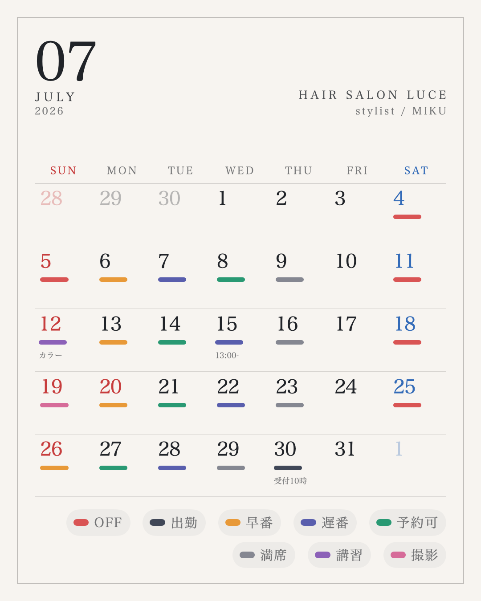
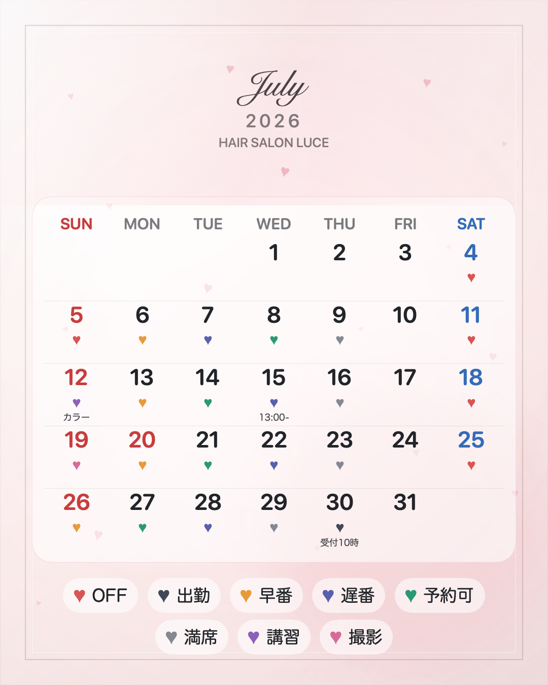
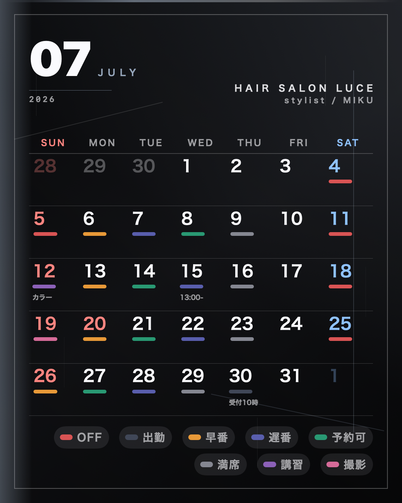
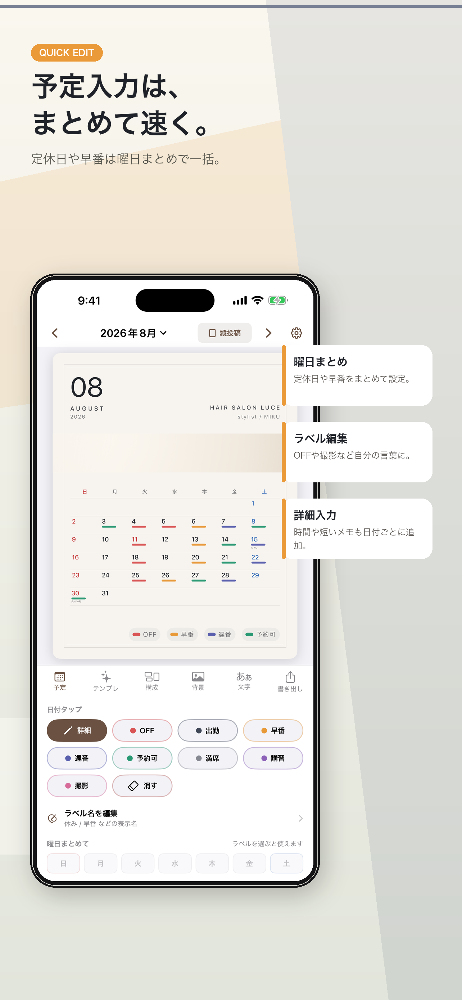
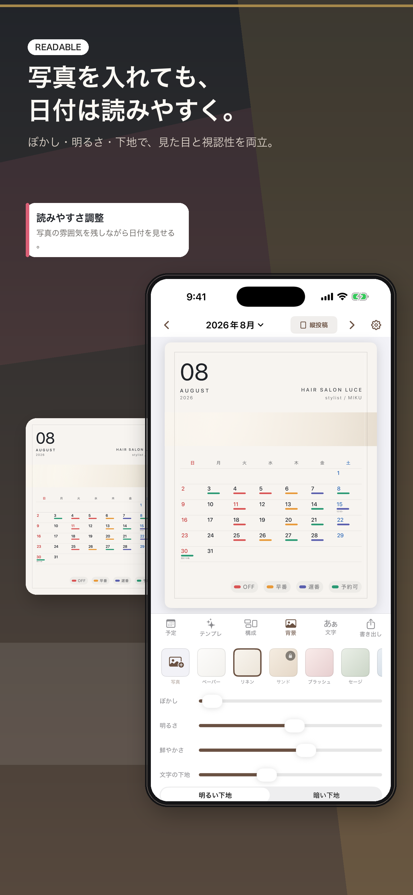
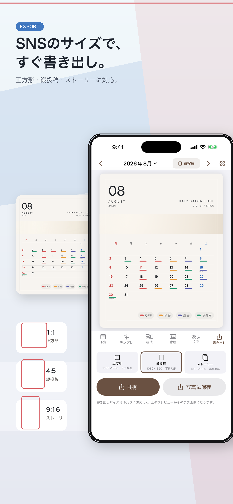

細い罫線と余白で、すっきり。
日付と予定を読み取りやすい、余白のあるレイアウトです。



Designs
テンプレートを切り替えると、背景や書体がまとめて変わります。入力した予定はそのまま残ります。
日付と予定を読み取りやすい、余白のあるレイアウトです。
淡いピンクに小さなハートを合わせた、やわらかい配色です。
黒い背景に明るい日付と細い罫線を合わせ、落ち着いた印象にまとめます。
予定の作成・保存・共有は無料です。縦投稿とストーリーには、無料でも写真背景を使えます。
Proは月額または年額の自動更新サブスクリプションです。価格と更新条件はアプリ内のApple購入画面で確認でき、購読の管理・解約はApple Accountの設定から行えます。
サイズを選び、予定を入力して、画像に書き出します。
正方形（1080×1080）、縦投稿（1080×1350）、ストーリー（1080×1920）から選びます。

定休日などは曜日ごとに一括入力。ラベル名や背景、書体も変更できます。

完成した画像を写真アプリに保存できます。共有ボタンからSNSなどへ送ることもできます。

アカウント登録は不要です。広告の表示や、利用状況の収集は行いません。予定や写真は端末内に保存し、開発者のサーバーには送信しません。Proの購入手続きや契約状況の確認はAppleが行います。
ご質問、不具合のご報告、ご要望はGitHub Issuesで受け付けています。投稿内容は公開されます。お客様のお名前、連絡先、ご予約内容、施術中のお写真などは書き込まないでください。
予約受付・管理機能はありません。入力した予定を静止画にして、保存・共有するアプリです。
無料で予定の作成・編集、テンプレート6種類、背景5種類、3サイズの保存・共有を利用できます。縦投稿・ストーリーの写真背景も無料です。Proではテンプレート23種類と背景9種類を追加し、正方形の写真背景、追加の枠・光・モチーフ、予定マークの位置とフォントの調整が使えます。
現在のバージョンは、静止画のカレンダー作成・保存・共有に対応しています。動画編集、GIF/MP4書き出し、アニメーション素材の書き出しには対応していません。
サロンの告知や宣伝に使えます。取り込む写真や文字などについては、必要な利用許可をご確認ください。